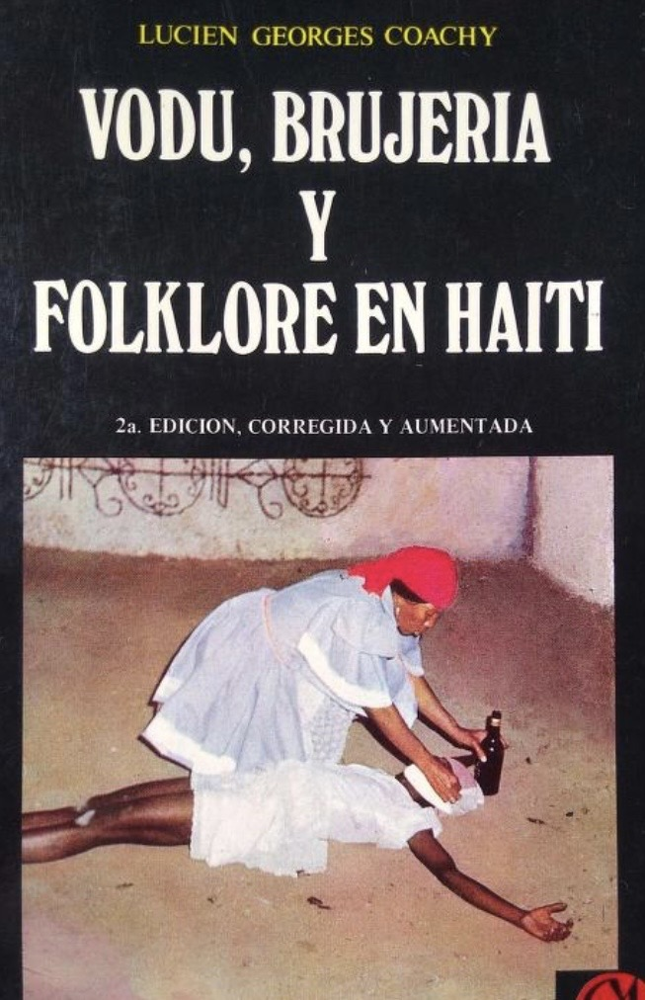

⏳ Disponible por tiempo limitado

Este libro explora prácticas, creencias y rituales del vudú haitiano desde una perspectiva profunda y tradicional.
✔ Ritualística
✔ Cultura espiritual
✔ Folklore
✔ Creencias ancestrales
✔ Prácticas tradicionales
✔ Comprender el vudú real
✔ Aprender prácticas culturales
✔ Expandir conocimiento espiritual
✔ Conectar con tradiciones antiguas